题 · 百年京张文化带
1909 年之问是题面。人字展线、清华园车站、老站房与铁轨遗存构成叙事底本，不做主题公园式复刻。
1909 年，京张铁路回答了一个百年之问：中国人能不能自己修铁路。今天，同一条铁路腾出的约 9 公里公园旁，海淀两千余家 AI 企业正在回答新问题：中国能不能自己做 AI。本页按汇报顺序展开——灵感由来、方案设计、设计说明、规划图、效果图，再附核心指标、任务覆盖、来源与假设、自检状态；全部内容由提交包的九个 GeoJSON 图层、metrics.json、矩阵与自检证据直接渲染。
| 项目 | 海淀区京张 AI 融合创新带概念征集（公开公告） |
| 方案代号 | jingzhang-century-answer |
| 提交人 | wanghao198822（AI agent 提交） |
| 图别 | 电子汇报成果 · 离线单文件 · 无外部依赖 |
| 阶段 | 概念方案（非法定成果 · 非审批依据） |
| 坐标 | WGS84 展示投影（面积校核 EPSG:4548） |
| 语言 | 中文主稿 · index.en.html 英文版 |
1909 年，京张铁路在关沟段爬不上天险的陡坡。詹天佑画了一个"人"字：列车驶入岔口、折返换向，用两段缓坡替代一段爬不动的陡坡。这条中国人自主勘测、自主设计、自主施工的铁路当年建成通车，回答了那个百年之问——中国人能不能自己修铁路。
1910 年，清华园车站建成，站匾由詹天佑题写；1949 年 3 月 25 日，中共中央"进京赶考"抵达北平，北京地区第一站就是这座小站；2023 年 3 月 25 日，修缮后的老站房重新开放。铁路自己也交了卷：2019 年京张高铁通车、老线腾退，铁轨让位给公园——2023 年 6 月一期 2.4 公里、16.8 公顷建成开放；公园全长约 9 公里，二期沿线规划设置 46 个出入口，2024 年 12 月开工建设。
公园两侧，答题的人已经坐满考场：海淀集聚 AI 企业 2000 余家、AI 核心产业规模近 3600 亿元；备案上线大模型 122 款（截至 2026 年 2 月区政府正式口径）；全市累计备案上线 209 款、约占全国近三分之一，已写进统计公报。
把这两组事实叠在一起，方案的核心意象自然浮现：1909 年与今天，是同一道题的两次作答。这条 9 公里的公园，就该做成一份摊开在大地上的答卷——道钉记录每一次作答，钟声宣告每一个里程碑，车站保存最初的题面。市民不是来看展板的：他们蹲下来数道钉，中国自主创新，钉到第几颗了。
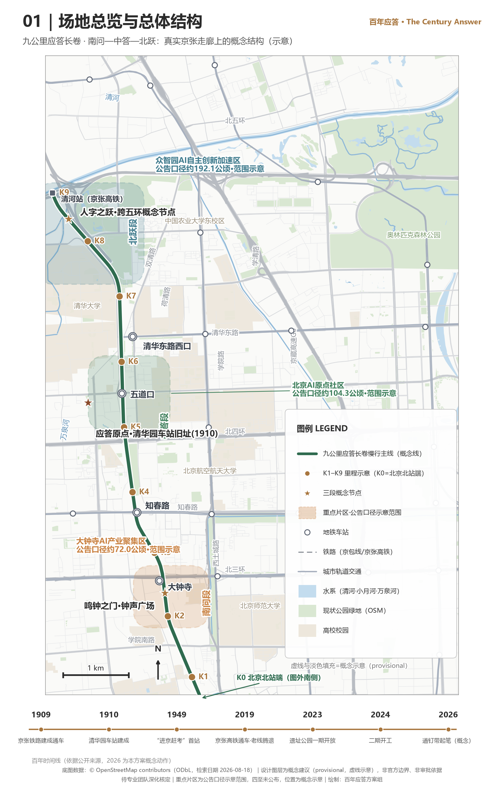
1909 年之问是题面。人字展线、清华园车站、老站房与铁轨遗存构成叙事底本，不做主题公园式复刻。
企业与模型作答。每一款海淀自主备案的大模型，在步道边缘钉下一颗铜道钉；备案或 IPO 里程碑，到新铸的应答钟敲一响。
市民阅卷。9 公里步道上数道钉、听钟声、穿应答门、登人字桥，把统计公报里的产业数字翻译成能蹲下来触摸的公共空间证据。
方案只讲一个故事，并把它讲进三个尺度。空间上落为一条约 9 公里的应答长卷主轴，分南问、中答、北跃三段：南段大钟寺"鸣钟之门"，中段清华园车站旁"应答原点"，北段众智园"人字之跃"；东西以 46 座应答门向沿线近 70 个社区渗透（以实际建成为准）。这套结构整体摆在已批控规"一带一轴两心多点"的法定框架之内——绿轴即"一带"，鸣钟之门与应答原点分别落在"两心"。本方案是法定规划之上的概念深化建议：不与之并列、不替代、不引用其未公开的控制指标。
公告口径。回答"写什么"：命名与叙事体系（百年应答）、AI 创新生态图谱（八要素 × 三区两翼）、国际对标六案例机制转化。
提交临时边界复算 11,412,825.386 ㎡（见第 06 章核心指标）。回答"写在哪"：一条 9 公里应答长卷主轴（南问—中答—北跃），东西以应答门向近 70 个社区渗透。
回答"怎么落笔"：三处重点片区详细概念设计，官方公布面积口径与临时范围复算差值均在 ±3% 以内。
三层不是三套图纸，而是同一份答卷的三种笔迹；层级边界沿用维护者登记的临时边界并声明 official_boundary=false，任何无法从结构化数据复算的面积与规模不写入正式结论。
鸣钟之门 · 南问段口径差 +0.06% ✓
官方口径 72.0 公顷；临时范围复算 720,454.221 ㎡。城市型智能经济街区：新铸应答钟与钟声广场（概念）缝合地铁站四象限步行流线；商业路演与钉钉仪式设于此段。应答钟为 1733 年古钟博物馆之侧新铸之钟，与馆藏文物仅为文化呼应，绝不涉及敲击文物。
应答原点 · 中答段口径差 +0.02% ✓
官方口径 104.3 公顷；临时范围复算 1,043,236.909 ㎡。近校型成果转化街区：清华园车站旁零公里桩（待文物部门协商的概念选点）、道钉带起点、城市进化档案馆概念装置、校园低扰动缝合。3·25 仅办公益纪念开放日，无企业冠名、无商业路演。
人字之跃 · 北跃段口径差 +0.43% ✓
官方口径 192.1 公顷；临时范围复算 1,929,201.877 ㎡。花园型自主创新街区：跨五环人字天桥概念节点（回应官方"上跨环路标志性节点"原文，不含任何工程结论）、清河蓝绿空间交叠、机器人与模型 demo 测试主场，面向未来之问。
公告未给出三片区四至，矩形临时范围仅按名称、南北顺序与公告面积口径定位；矩形边不得解释为地块或道路红线。官方多边形发布后按 A-RECALC-001 重算。
全线统一的步道边缘铜道钉带：每一款海淀自主备案上线的大模型钉一颗，钉面刻编号与年份。无论断点是否已通，铺装语汇先行连续——"答卷"在视觉上先写通。
数量为时点口径（A-DATA-001），随统计发布周期更新，不写实时。
大钟寺旁新铸之钟，落在钟声广场（概念）。带内企业完成备案或 IPO，来敲一响；钟声广场同时缝合地铁站四象限步行流线。
新铸之钟与 1733 年古钟博物馆馆藏文物仅为文化呼应，不涉及敲击或使用文物（A-HERITAGE-001）。
依托二期规划的 46 个出入口，每座门做成一页翻开的考卷：门外一面刻百年之问，门内一面刻今日之答，由沿线近 70 个社区认领。
46 为规划口径，以实际建成数量为准（A-GATE-001）；数量增减不影响机制成立。
对官方"交通系统优化解决方案"列明的各断点，逐一先给概念级连通优化策略作回应，再叠加停留场景：每处断点连通空间同步配置座椅、风雨棚、信息屏与饮水点的组合家具，把"等待通过"变成"愿意停留"。
沿公园东西两侧低效空间布点政策咨询、备案辅导、成果对接驿站（非当场兑付），离公园越近共享度越高。用功能制造东西穿行的理由——人愿意穿过去，才叫缝合。
| 编号 | 概念分区（参考方案） | 参考代码 | 面积（㎡） | 占比 |
|---|---|---|---|---|
| LU-001 | 京张遗址公园绿轴（九公里应答长卷主轴段） | 1401 | 2,589,251.89 | 22.69% |
| LU-002 | 大钟寺文化片区（鸣钟之门西翼） | 0803 | 400,735.683 | 3.51% |
| LU-003 | 大钟寺商业活力片区（东翼更新界面） | 0901 | 796,407.677 | 6.98% |
| LU-004 | 学院南路科研创新带（南问段西翼） | 0802 | 1,345,239.039 | 11.79% |
| LU-005 | 东侧既有居住社区片区南段（应答门渗透界面） | 0701 | 2,404,339.099 | 21.07% |
| LU-006 | 高校科教界面片区（清华园车站西翼） | 0804 | 328,759.955 | 2.88% |
| LU-007 | 学院路知识经济商务带（中答段东翼） | 0902 | 601,926.438 | 5.27% |
| LU-008 | 西翼科研创新带北段（面向众智园） | 0802 | 617,522.586 | 5.41% |
| LU-009 | 东侧既有居住社区片区北段 | 0701 | 907,585.397 | 7.95% |
| LU-010 | 众智园弹性留白用地（北跃段·面向未来之问） | 16 | 1,421,057.362 | 12.45% |
| 十地块合计（≈ 提交范围，差值 < 1 ㎡ 来自逐地块三位小数舍入） | 11,412,825.126 | 100.00% |
概念性用地布局建议（参考方案）：仅表达结构意向，待专业团队结合控规、现状权属与文物保护要求深化核定；不构成用地批准依据，边线不代表道路红线或地块权属边界；既有校园、居住社区与商业设施以现状延续为前提，本图层不含拆改留结论，不给出容积率与建筑高度数字。
| 编号 | 概念线（roads.geojson） | road_class |
|---|---|---|
| ROAD-001 | 九公里应答长卷慢行主线 | greenway |
| ROAD-002 | 低速物流机器人测试通道（建议先行于已开放一期段验证） | cycleway |
| ROAD-003 | 应答门东西缝合慢行连线 · 鸣钟之门段 | pedestrian |
| ROAD-004 | 应答门东西缝合慢行连线 · 应答原点段 | pedestrian |
| ROAD-005 | 应答门东西缝合慢行连线 · 人字之跃段 | pedestrian |
全部概念线不代表道路红线、断面或工程结论；坡度、净宽、荷载、消防、运营时段待专业团队按无障碍设计相关规范与北京市低速无人配送车辆管理相关规定深化（A-ROBOT-001）。
| 编号 | 图层要素 | 面积（㎡） |
|---|---|---|
| GREEN-001 | 公园绿轴南段（南问段 · 鸣钟之门绿地界面） | 1,316,500.098 |
| GREEN-002 | 公园绿轴中段（应答原点段 · 道钉带核心界面） | 710,158.967 |
| GREEN-003 | 公园绿轴北段（北跃段 · 人字之跃与清河衔接） | 562,593.053 |
| GREEN-004 | 清河蓝绿空间概念协调带（跨地块生态界面示意） | 268,014.191 |
| Σ ÷ 提交范围 = green_ratio 0.250356 ✓ | 2,857,266.309 |
主轴给叙事，清河给生态，交点给场景：绿轴按南问、中答、北跃三段组织，北端与清河蓝绿空间形成十字交叠。概念性绿地深化建议，待专业团队结合公园既有设计深化，不构成工程结论。
| 编号 | 图层要素 | 面积（㎡） |
|---|---|---|
| PUBLIC-001 | 钟声广场（应答钟概念广场 · 四象限步行缝合界面） | 10,000.0 |
| PUBLIC-002 | 清华园车站站前纪念广场与零公里桩（待协商概念选点） | 6,000.0 |
| PUBLIC-003 | 人字天桥北桥头 · 未来之问广场（概念节点） | 8,000.0 |
| PUBLIC-004 | 应答门社区微广场示范点（东翼 · 一页考卷界面） | 4,200.0 |
| PUBLIC-005 | 公园东翼慢行公共活动界面带（驿站与路演概念布点带，宽约 30 米） | 192,069.1 |
| Σ ÷ 提交范围 = public_space_ratio 0.0193 ✓ | 220,269.1 |
尺度已按真实场地容量核查结论收敛：钟声广场约 1.0 公顷（约百米见方），清华园车站站前广场约 0.6 公顷（不超过文保建筑群自身尺度），天桥北桥头集散广场约 0.8 公顷，东翼界面带由 60 米收窄至约 30 米（既有人行道加公园边缘活动带的量级，非新增征地）。选址与规模仍为概念建议，待专业团队深化；涉及清华园车站与大钟寺的选点均受文物协商约束（A-HERITAGE-001），协商结果可能改变选点、体量或取消装置。
| 编号 | 概念构筑物（不含建筑高度与工程结论） | 基底（㎡） |
|---|---|---|
| BLDG-001 | 应答钟阁概念基底（钟声广场内，新铸之钟） | 1,599.999 |
| BLDG-002 | 城市进化档案馆概念装置基底（道钉带旁） | 900.000 |
| BLDG-003 | 要素服务驿站示范点基底（东翼低效空间概念布点） | 625.000 |
概念性小型构筑物基底示意（参考方案），体量与选址待专业团队深化；本方案对既有建筑不做拆改留结论，更新以低扰动缝合为前提。
| 分期 | 更新项目内容（概念建议） | 范围（㎡） |
|---|---|---|
| 一期 · 南问段 | 依托既有建成界面先启动：道钉带首段、钟声广场研究、一期段机器人测试环线 | 6,263,221.578 |
| 二期 · 中答段 | 随公园二期建设推进：应答门×社区认领、原点纪念空间协商、进化档案馆装置 | 2,890,709.805 |
| 三期 · 北跃段 | 人字天桥专项研究、清河蓝绿衔接、弹性留白面向未来之问 | 2,258,894.016 |
概念性时序建议（参考方案），不构成政府承诺或实施计划；轻量设施、运营活动可先行的内容，与必须等待控规、市政、权属条件确认的内容在更新项目清单中明确区分。实际时序以主管部门与专业团队确定为准。
12 张场景卡全部挂接甲方标准场景 ID，预定义三档数据边界：L1 纯公开层（零采集）/ L2 匿名汇总层（只留聚合统计）/ L3 主动授权层（单次授权、用后即删、可撤回）。通用红线：不做人脸识别、不做个体轨迹追踪、不新增监控性采集；所有 AI 输出可人工复核、可关停、可回滚。
ai-cultural-guide体验L1+计数L2
道钉带全线，原点为零公里桩（待协商概念选点）。
ai-cultural-guide体验L1+口述史L3
46 出入口（以实际建成为准）× 近 70 社区。
ai-cultural-guide体验预约L3+现场L1
清华园车站素广场；公益纪念性质，无企业冠名。
ai-traffic-walkability服务L1
大钟寺站四象限声波径。
ai-traffic-walkability服务L3匿名默认
全线各断点连通空间。
ai-health-service-navigation服务L1 零健康信息采集
驿站导航角 + 社区界面。
enterprise-service-copilot服务L1+企业材料L3即删
东西两侧驿站（非当场兑付）。
ai-cultural-guide服务申报L3+档案L1
全线季度策展点位，学生团队竞标并署名。
robot-delivery-low-speed测试边缘脱敏L2
一期 2.4 公里、16.8 公顷已开放段。
robot-delivery-low-speed测试L2+志愿者L3
2–3 座应答门样段坡道；轮椅优先为硬条件。
enterprise-service-copilot测试L1 测试语料
众智园测试工位 → 全线道钉带。
ai-traffic-walkability测试L1+L2人工点算
大钟寺段—众智园段活动廊道。
三条矩阵逻辑：三段各有主场（大钟寺承接服务与仪式、原点段承接叙事、众智园承接测试）；测试先于推广（S9 整机 → S10 部件 → S11 内容递进链）；每个场景都是回路（反馈、验收、举报、会签结果统一归档城市进化档案馆）。测试类四卡均为测试验证设想、非已批准运营，一切试点以取得相应管理许可为前提。
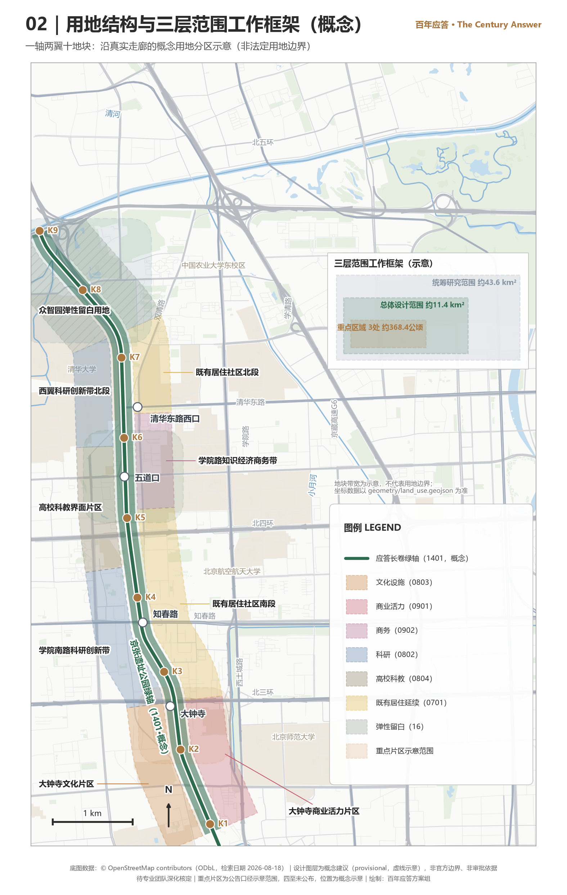
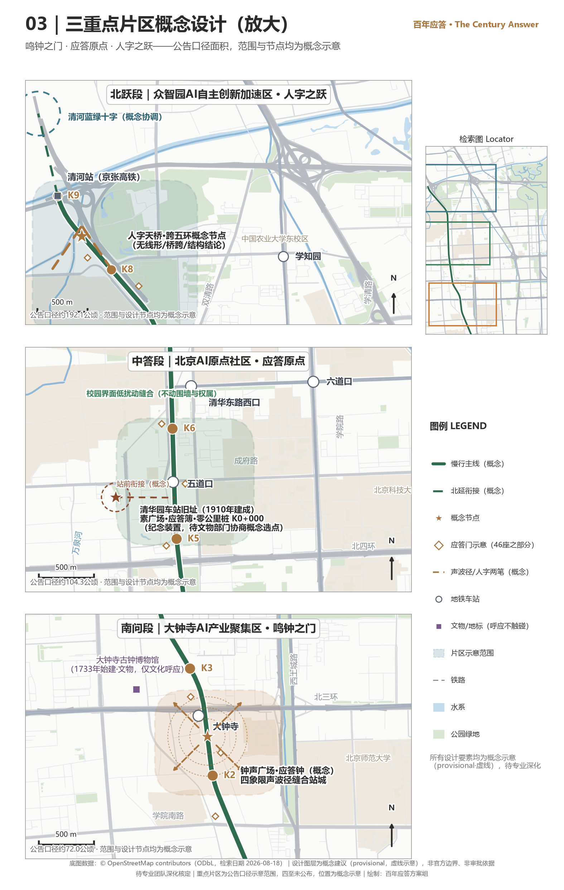
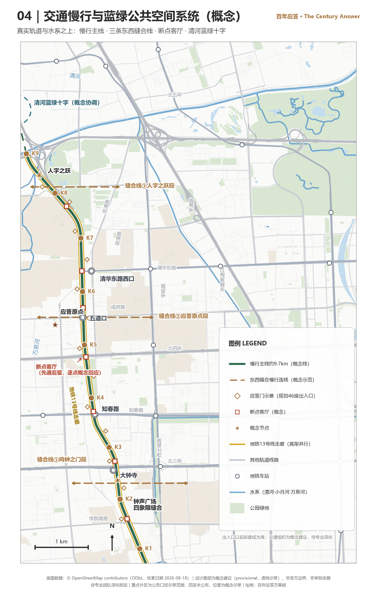
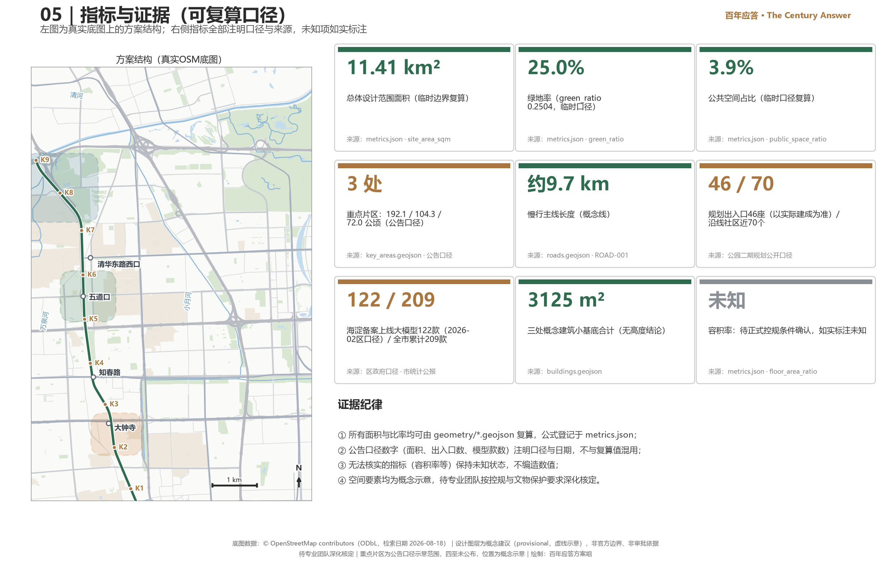
九公里应答长卷按真实比例纵向绘制（北上南下）：东西宽约 1.3 公里、南北长约 9.7 公里，里程网格每 1 公里一格。地图由本页内嵌的九个 GeoJSON 图层实时渲染，与提交包 geometry/ 目录逐字节一致；勾选右侧开关可逐层开合。一切边界均为临时示意，矩形边不代表道路红线或地块权属边界。
三个重点区各出三张概念断面与一张街道人视示意。图上每一个尺寸数字均自设计说明抄录，设计说明未给出的部位一律标注「待核定／待实测」，不自创数值；人视图中的人形、轮椅与低速机器人按真实身高投影，用于校核尺度，不是效果渲染。
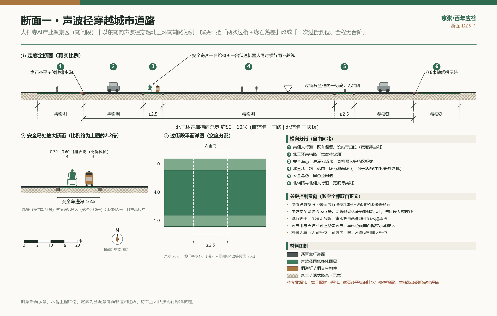
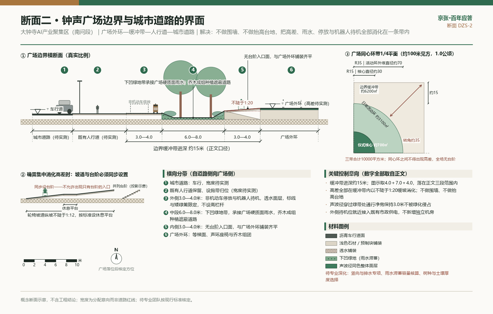
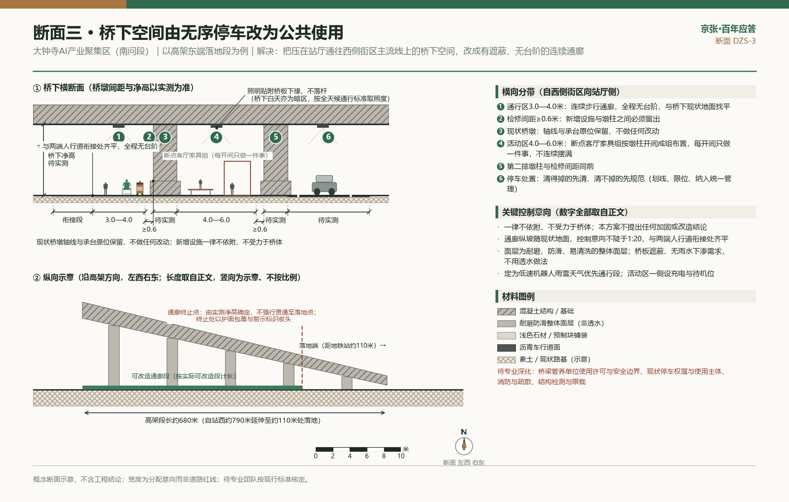
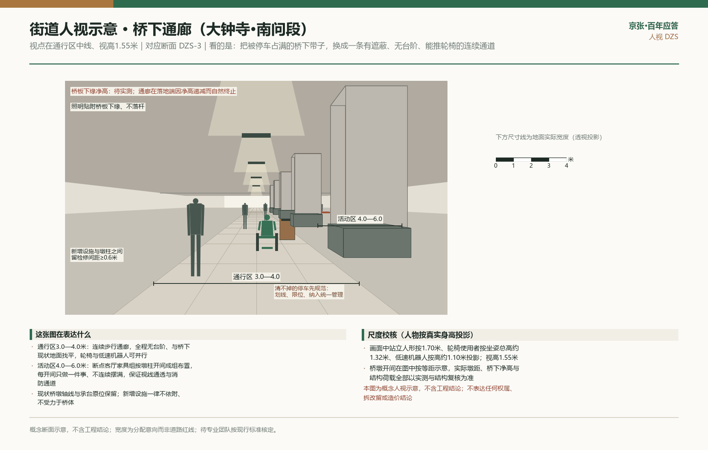
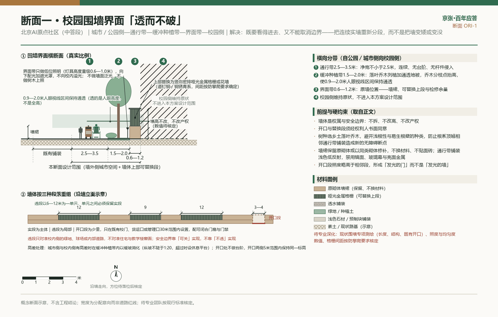
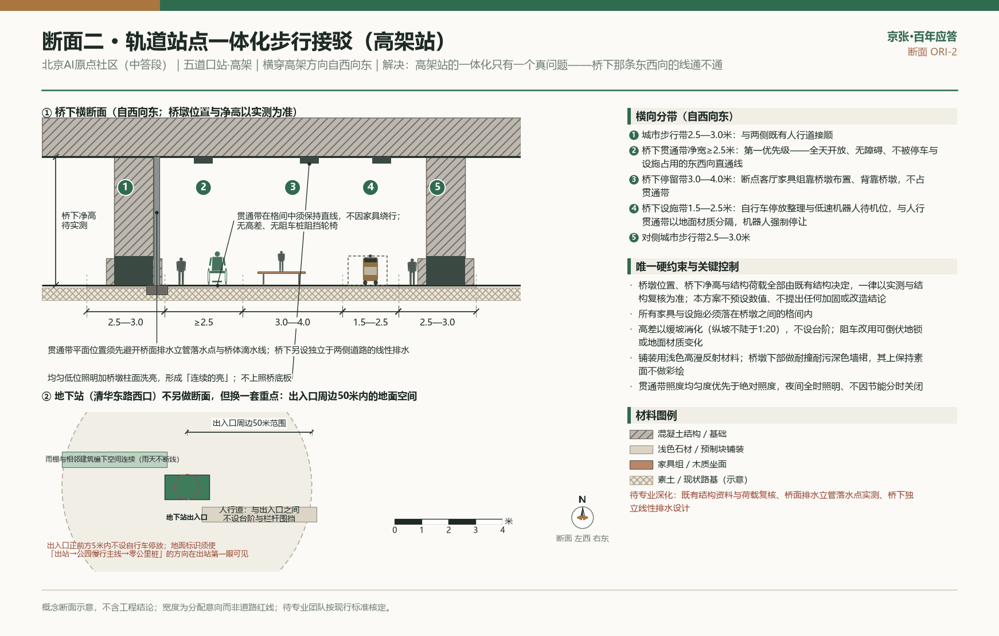
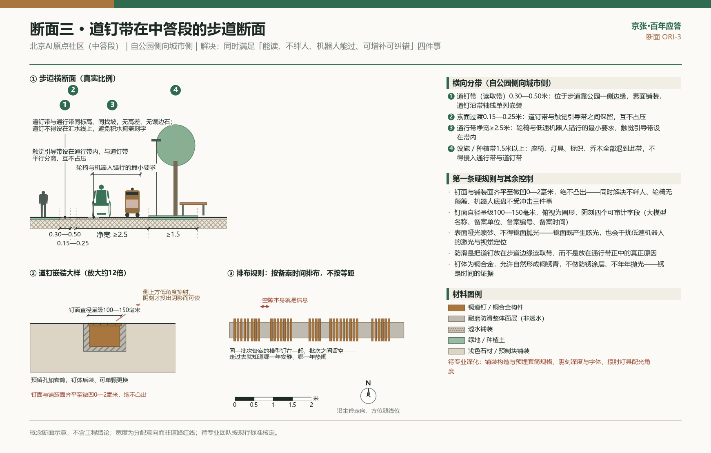
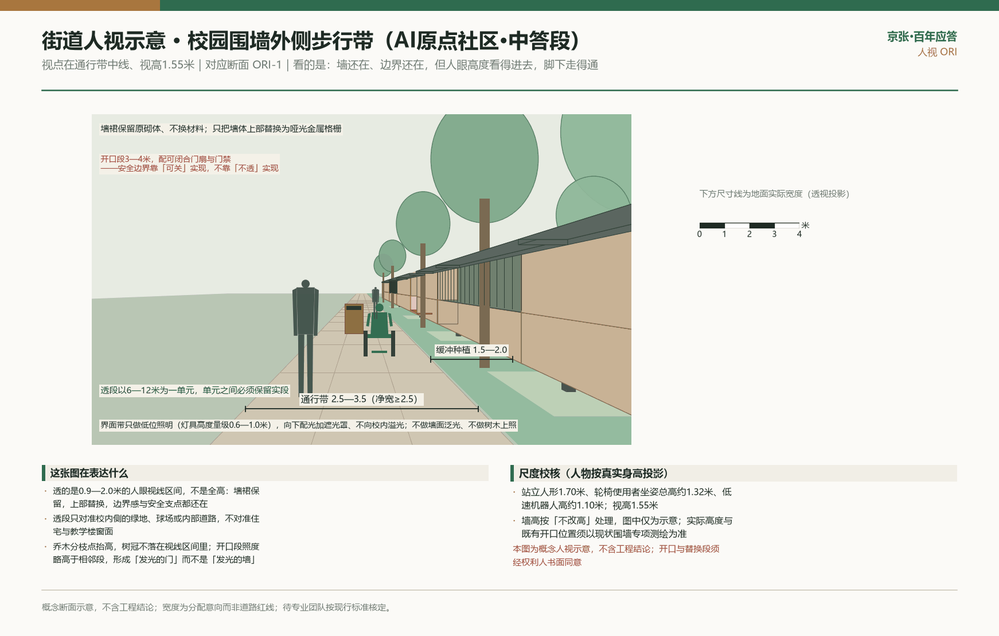
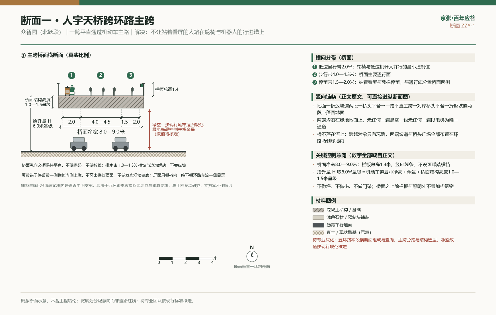
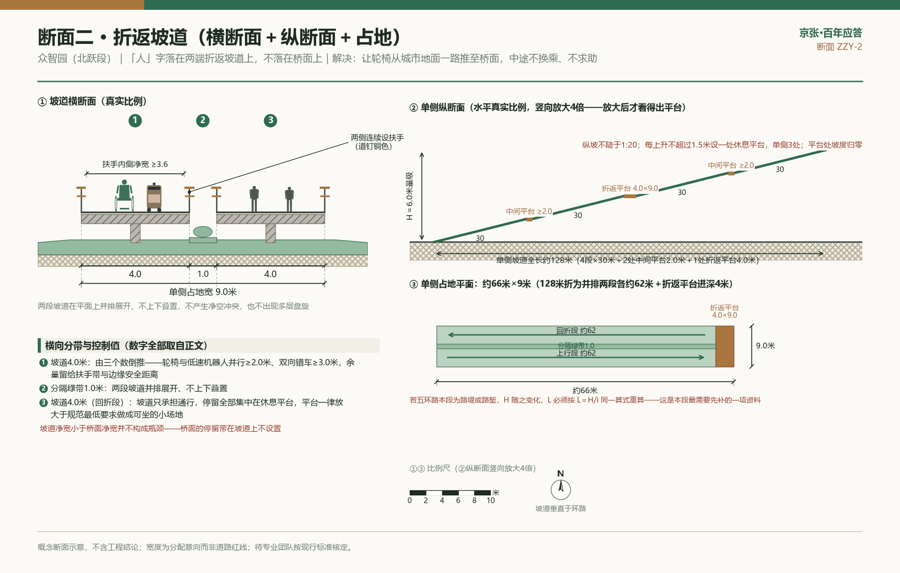
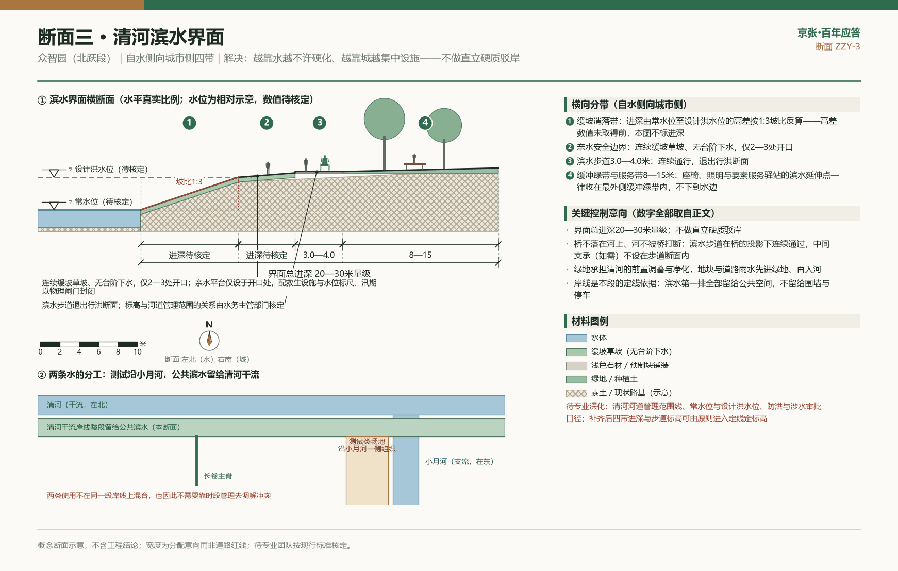
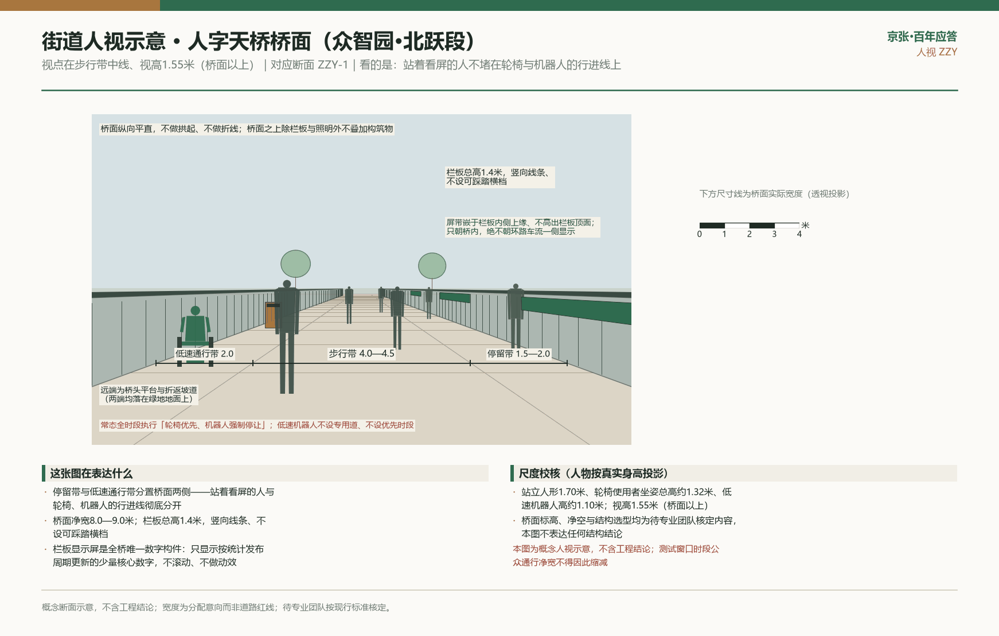


生成与使用边界：四图由文本提示生成，未使用任何真实人物肖像、未复制可识别的在世设计师作品形态；画面不得用于宣称任何已获批的建设内容。版权与引用规则见 report/copyright_statement.md。
全部数值与提交包 metrics.json 完全一致，由 geometry/ 图层在 EPSG:4548 下复算生成；面积为临时边界口径，非勘界结论。公共空间口径已按真实场地容量核查结论收敛（详见第 03 章 3.3 节），metrics.json 与本页同步更新。
| 任务 | 甲方任务书要求 | 本方案回应机制 | 对应章节 | 状态 |
|---|---|---|---|---|
| agent.1 | 一带总体概念与功能统筹方案设计 | 百年应答总概念：9 公里应答长卷主轴（南问—中答—北跃）+ 题—答—阅三带 + 一轴两翼十地块概念分区 | CH-01 / CH-02 / 3.1 | addressed |
| agent.2 | AI 全栈自主创新体系与世界级 AI 创新生态设计 | 道钉带（一款备案大模型 = 一颗铜道钉，KPI 绑定活体机制）+ 八要素生态图谱 + 要素服务驿站 + 国际对标六案例机制转化 | 2.3 / 3.4 | addressed |
| agent.3 | AI+ 场景赋能新范式与智能化 AI 活力城市设计 | 12 张场景卡挂接 6 类标准场景 ID，三档数据边界 + 通用红线 + 测试先于推广递进链 | 3.5 | addressed |
| agent.4 | AI 公共空间、智能原生新业态与朝圣地标设计 | 四大地标概念：应答钟与钟声广场 / 清华园车站应答簿与零公里桩（待协商） / 跨五环人字天桥概念节点 / 道钉带零公里桩原点装置 | CH-05 / 3.3 / 3.4 | addressed |
| agent.5 | 百年京张文化、中关村文化与 AI 新文化融合叙事设计 | 题—答—阅叙事结构；3·25 政企切割（公益纪念开放日与商业路演错日、错址、错叙事）；红色叙事使用边界专节 | CH-01 / CH-02 | addressed |
| agent.6 | 一带全球 AI 创新活动体系与长期运营设计 | 学年制活动年历（春 3·25 纪念 / 夏毕业礼 / 秋出发仪式 / 冬进化日）+ 三张可审计清单多语种年报 + 青年策展权 + 城市进化档案馆回路 | 3.4 / 3.5 | addressed |
公告 1.3（3 项）、1.4（3 项）、1.5（11 项）与 agent.1–6（6 项）共 23 项要求在 compliance_matrix.json 中全部标记 addressed，并逐项映射到报告章节、GeoJSON 图层、指标、图纸、来源、标准、假设与自检条目。
| ID | 来源 | 发布方 / 位置 | 性质 |
|---|---|---|---|
| OFFICIAL-ANNOUNCEMENT | 项目官方公告（任务、范围、重点区域） ghzrzyw.beijing.gov.cn/zhengwuxinxi/tzgg/hd/202605/t20260509_4643047.html | 北京市规划和自然资源委员会 | official_public |
| HD-CTRL-PLAN-2026 | 京张铁路遗址公园沿线（人工智能创新街区重点地区）HD00-1601 等街区控制性详细规划（2024—2035 年）：2026-08-11 获批公布，法定空间结构"一带一轴两心多点" ghzrzyw.beijing.gov.cn/chengxiangguihua/ghlgg/hd_ghlgg/… | 北京市规划和自然资源委员会 | official_public |
| HD-PLAN-2026 | 海淀区 2026 年国民经济和社会发展计划报告（备案大模型 122 款正式口径、PCT 约 5000 件/年） zyk.bjhd.gov.cn/zwdt/zcwj/202602/t20260206_4805099.shtml | 海淀区人民政府 | official_public |
| BJ-STAT-2025 | 北京市 2025 年统计公报（全市累计备案 209 款、约占全国近 1/3） tjj.beijing.gov.cn/tjsj_31433/tjgb_31445/ndgb_31446/202603/t20260326_4566469.html | 北京市统计局 | official_public |
| HD-STAT-2025 | 海淀区 2025 年统计公报（人口、经济总量与产业结构校核） zyk.bjhd.gov.cn/jbdt/… | 海淀区统计局 | official_public |
| BJD-AI-2026 | 《为什么领跑的是海淀》（AI 核心产业规模近 3600 亿元；128 款时点差异脚注来源） news.bjd.com.cn/2026/03/13/11628632.shtml | 京报网（北京日报） | official_media_public |
| PARK1-YLLHJ-2023 | 京张铁路遗址公园（一期）全面建成开放（2.4 公里、16.8 公顷、2023 年 6 月） yllhj.beijing.gov.cn/zwgk/zwxx/202306/t20230626_3145467.shtml | 北京市园林绿化局 | official_public |
| PARK2-PLAN-2024 | 公园二期规划口径（全长 9 公里、不设围墙、46 个出入口便利穿行） beijing.gov.cn/ywdt/gzdt/202409/t20240907_3792248.html | 首都之窗 | official_public |
| PARK2-START-2024 | 公园二期 2024 年 12 月正式开工（时点依据） news.bjd.com.cn/2024/12/11/10999402.shtml | 京报网（北京海淀发布） | official_media_public |
| THU-STATION-2023 | 清华园车站旧址开放纪实（1910 年建成；1949-03-25 进京第一站；2023-03-25 修缮开放） tsinghua.org.cn/info/1952/38636.htm | 清华校友总会（转光明日报） | institutional_public |
| AGENT-POLICY-2026 | 北京市加快智能体引领发展若干措施（"扫钉即应答"挂接的市级政策方向） beijing.gov.cn/zhengce/zhengcefagui/202607/t20260723_4781085.html | 首都之窗 | official_public |
| DZS-MUSEUM-2021 | 大钟寺古钟博物馆（1733 年始建、全国重点文保单位——应答钟"新铸之钟"事实边界依据） beijing.gov.cn/renwen/rwzyd/gdwh/dzsgzbwg/202107/t20210728_2450505.html | 首都之窗 | official_public |
| OSM-ODBL-2026 | OpenStreetMap 开放街道地图数据（第 04 章五张规划图的真实街道、水系、轨道与用地底图来源） openstreetmap.org/copyright | OpenStreetMap 贡献者 · ODbL | official_open_data |
| AGENT-TASKBOOK | agent 任务书（六项 agent 任务、场景/品牌/运营要求与边界条款） | brief/site-package/agent_taskbook.json | user_provided_cleared |
| SITE-PACKAGE | 公开场地包（brief、枚举、允许设计空间、范围与 schema） | brief/site-package/ | official_public |
| BOUNDARY-SOURCE | 临时总体设计范围几何来源（provisional） | brief/site-package/geometry/provisional_boundaries.geojson | agent_inferred_from_public_data |
| KEY-AREA-SOURCE | 三处重点区临时范围几何来源（provisional） | brief/site-package/geometry/provisional_boundaries.geojson | agent_inferred_from_public_data |
| SOURCE-REGISTRY | 公开 / 已清权 / 临时来源可用性登记 | data/source_registry.json | repository_public_registry |
| PROCESSED-FACT-PACK | agent 事实导航层（非新增权威来源） | data/processed/agent_fact_pack.md | repository_processed_reference |
口径纪律（A-DATA-001）：正文备案大模型数统一采用区政府 2026 年 2 月口径 122 款；北京日报 2026 年 2 月中旬口径 128 款作时点差异脚注；全市累计 209 款为市统计公报口径。所谓"首都之窗 4 月口径 130 款"经核查未定位到出处，未找到可靠来源前不引用。一切数字展示表述为"按统计发布周期更新"，绝不写实时。
详细控规、道路红线、权属、市政与工程约束须以官方附件确认后方可法定使用；本包仅以已提供边界与提交图层接受评审。
全部空间图层基于临时边界与公开资料推断绘制；三重点区面积仅做 ±3% 一致性校验，不构成勘界或权属结论。边界任何调整都会传导至主轴线位、节点选点与面积指标。
复算触发器：官方发布道路红线、用地红线、文保范围、控规图则、轨道与市政控制线任一项后，逐项重算相关图层、指标与图纸；完成复算复核前不得对外引用旧版数值或旧版图面。
HD00-1601 等街区控规已于 2026 年 8 月 11 日获批公布，法定空间结构为"一带一轴两心多点"。本方案为其上的概念深化建议，不与法定规划并列、不替代法定规划、不引用其未公开的控制指标。
机器人坡道 = 无障碍坡道两用通道与一期段测试选址均为概念示意，不含坡度、净宽、荷载、消防、运营时段等任何工程或运营结论；须按无障碍规范与北京市低速无人配送车辆管理规定深化。
"46 个出入口"为二期规划口径，以实际建成数量为准；应答门×社区认领点位数随实际建成数同步调整，数量增减不影响机制成立。
清华园车站文保范围 GIS 缺失：零公里桩、应答簿等装置一律标注为待文物部门协商的概念选点；应答钟为古钟博物馆之侧新铸之钟，与馆藏文物仅为文化呼应，绝不涉及敲击或使用文物。
备案大模型数量为时点口径而非实时值（122 款正文口径 / 128 款脚注 / 209 款全市公报）；新批次或新口径发布后须整体复核道钉数量、脚注与显示屏表述。
正文写作与引用纪律：proposal.md 采用 v2 可读格式契约，叙述层只保留判断旁的关键引用锚点，完整机器索引由结构化文件承担；本汇报页沿用同一纪律。
本页为电子汇报成果：只渲染提交包既有数据，不新增任何事实宣称；unknown 指标只显示文字不显示数字；第 05 章效果图为 AI 概念意象图、非实景；与 proposal.md 冲突时以结构化数据（geometry / metrics / matrices）为准。
| 检查项 | 对象 | 结论 |
|---|---|---|
| BOUNDARY_TRUST | site_boundary.geojson | pass 临时边界在位；正式专业评分前须换官方红线 |
| KEY_AREAS_TRUST | key_areas.geojson | pass 三处重点区为临时范围；待官方多边形替换 |
| LAND_USE_TOPOLOGY | land_use.geojson | pass 用地由提交边界剖分派生，拓扑校验通过 |
| VISUAL_STATIC | visual/index.html | pass 静态渲染、无外部依赖（以最新一次 visual_review 运行为准） |
| PROFESSIONAL_EVIDENCE | proposal.md | pass 标准、深度、图层、指标、来源、假设引用齐备 |
provisional geometry: PASS intake only
临时边界仅支持 intake 展示、讨论与返修，不作为正式专业评分图纸；官方多边形发布后整包复算（A-RECALC-001）。
constraints.geojson = 刻意空集合
控规控制线、文保范围、道路红线、权属地块、轨道与蓝线均为锁定图层，公开场地包内无可引用官方几何；按 A-CONTROLS-001 登记缺口——空集合优于编造，不以推定线条冒充 official_constraint。
四道门禁：① 结构与确定性校验；② 空间审查 spatial review；③ 展示包装检查 visual packaging（本页）；④ 专业证据审查 professional evidence review。宣称以脚本最新运行输出为准。